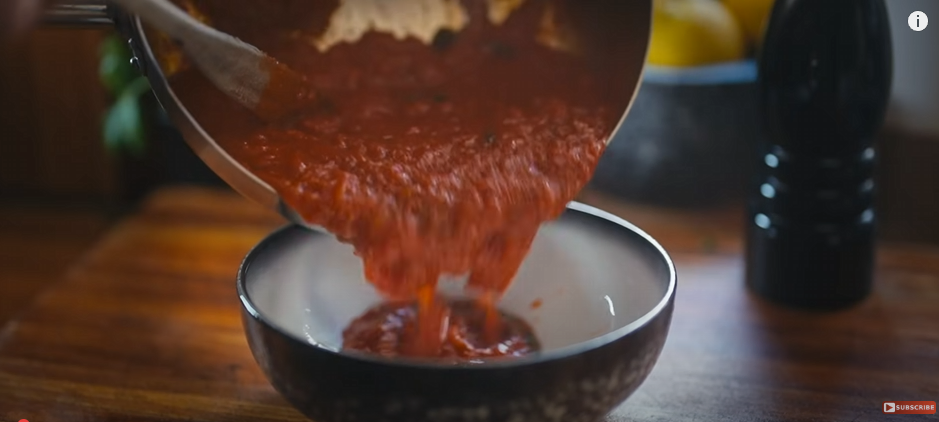
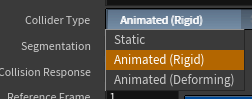
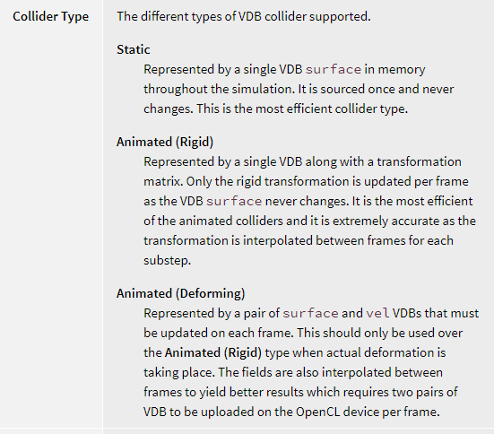
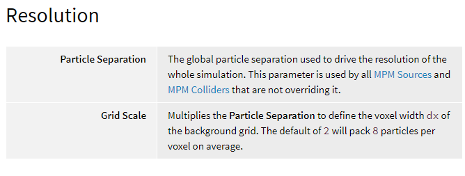

← 部落格 × VSFX728
待辦事項：


第 8 週
VSFX 728 － 第 8 週
大家好，這是我 VSFX 728 部落格的期末專案！
5 月 10 日
待辦事項：
1. 依照參考圖設定場景擺放
2. 簡單測試番茄醬倒出的效果（包含黏稠度與動畫的真實感）
這週我會開始用 MPM 測試番茄醬倒出的效果。
一開始，我嘗試配合鍋子的角度，把一個球形的 MPM 來源丟進鍋裡。但我發現很難控制，球體常常沒掉到正確的位置，尤其碰不到鍋子內側的上半部。

所以我改成一開始把鍋子平放，從上方倒入液體，之後再為鍋子的移動做動畫。這個做法不只更容易控制，也更真實，因為符合現實中倒液體的方式。
問題排解：
這週遇到的問題是：鍋子一開始移動，粒子就會穿過它。
我調整了兩件事。首先，我把碰撞體類型從 Animated (Rigid) 改成 Animated (Deforming)，也查了文件了解兩者的差別。因為 Animated (Deforming) 每一格都會重建形狀和速度，所以計算時間比較長。
雖然旋轉的物體通常用 Animated (Rigid) 就夠了，但在我的情況下，它沒辦法阻止粒子穿過去，只有 Animated (Deforming) 能穩定運作。我認為這是因為鍋子轉得很快，而且粒子非常貼近碰撞表面。
另一個調整是修改 Particle Separation 和 Grid Scale 以提高解析度。Particle Separation 控制粒子的密度，Grid Scale 影響背景網格的精細度。降低這兩個數值讓模擬更細緻也更穩定。



之前
之後
這是我依照參考圖搭建的場景。